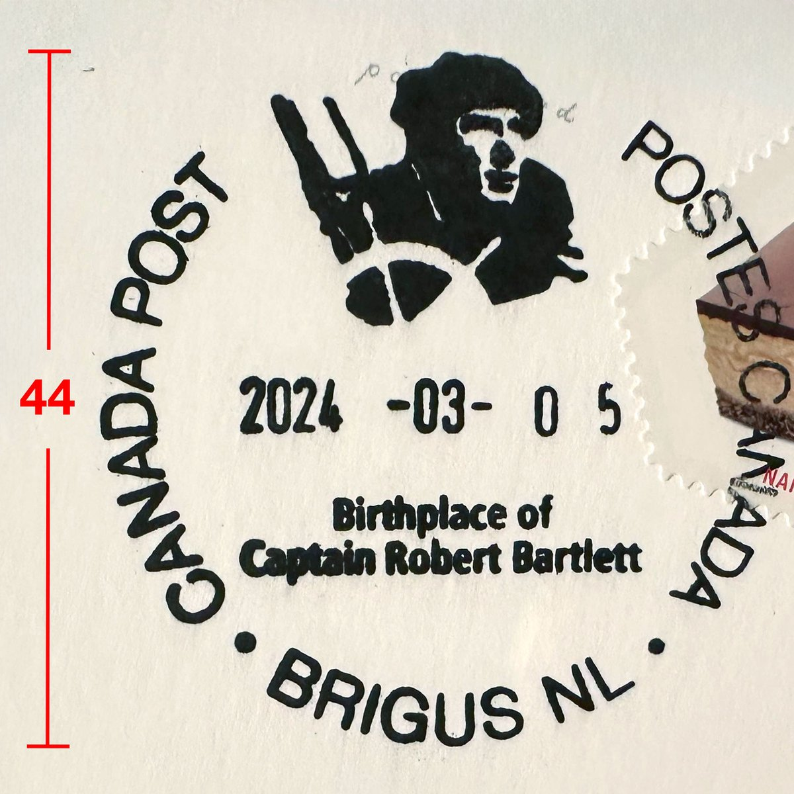

Brigus PO pictorial cancel
Birthplace of Captain Robert Bartlett
- Status
- Active
- Run dates
- ? to present
- Design
- "Birthplace of Captain Robert Bartlett"; human
- Ink colour
- Black
- Designer
- Unknown
- Post office
- Brigus PO
1 Main St
Brigus, NL
A0A 1K0 - Subjects
- birthplace, human
Collect it by mail. Send your stamped covers, with a stamped return envelope, to the post office address above. How to collect pictorial cancels by mail · en français
 Cupids POEnglish Canada
Cupids POEnglish Canada Cupids POHeart
Cupids POHeart Winterton POTRINITY HALL / CREATE, CONCREGATE, CELEBRATE / CRÉATION, RASSEMBLEMENT, CÉLÉBRATION
Winterton POTRINITY HALL / CREATE, CONCREGATE, CELEBRATE / CRÉATION, RASSEMBLEMENT, CÉLÉBRATION St John's A POFlower
St John's A POFlower